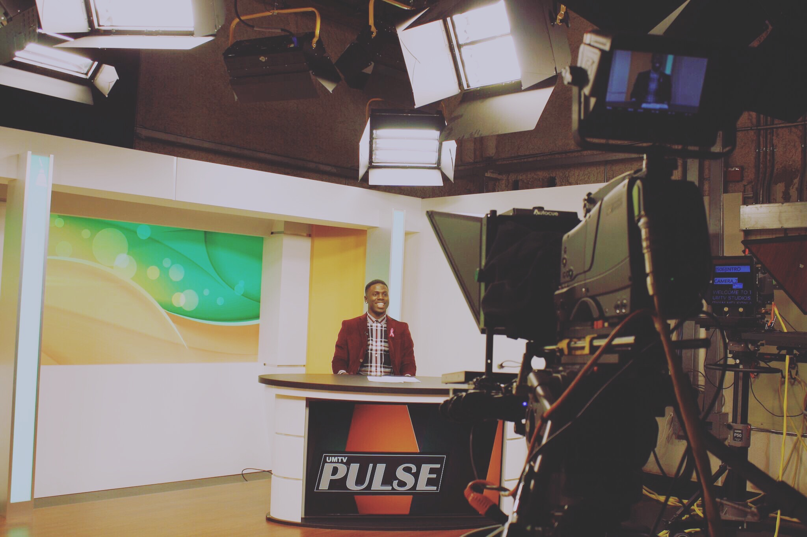

Ryan Nelson
Bio / Resume

- 2012 - Radio One Festival - Event Day Operations
- 2011-2014 - WEDR 99 Jamz (99.1FM) - Intern
- 2012 - Current - Tv One/ Radio One - Field Reporter
Ryan Nelson is currently the youngest freelance journalist in the TV One and Interactive One Network family, covering a variety of personalities and topics in music, sports, politics, lifestyle and current events. The personalities Nelson are: Dwyane Wade, Kirk Franklin, Nick Cannon, Kevin Hart, Gabrielle Union, Morris Chestnut, Nia Long, Sanaa Lathan,Waka Flocka, Keith David, Anthony Hamilton, B.O.B, Adrieen Bailon, Anthony Anderson, Bill Duke, Omari Hardwick, Anquan Boldin and many more.. Among the live events that Nelson has covered are: The African American Film festival in South Beach, Tom Joyner Family Reunions, Dwyane Wade’s “A Night On The RunWade” and more. He has also interned at WEDR 99 JAMZ in South Florida. Ryan D. Nelson was born in Los Angeles California. His parents are Peabody Award-winning Broadcaster Carl Nelson, currently host of Radio One’s “The Carl Nelson Show“ and Television Producer Lynda Hudson, executive producer of TV One’s “The Gospel of Music with Jeff Majors” for 5 seasons. He is currently enrolled in Graduate School at the University Of Miami to receive his Masters Degree in journalism. All glory goes to God.